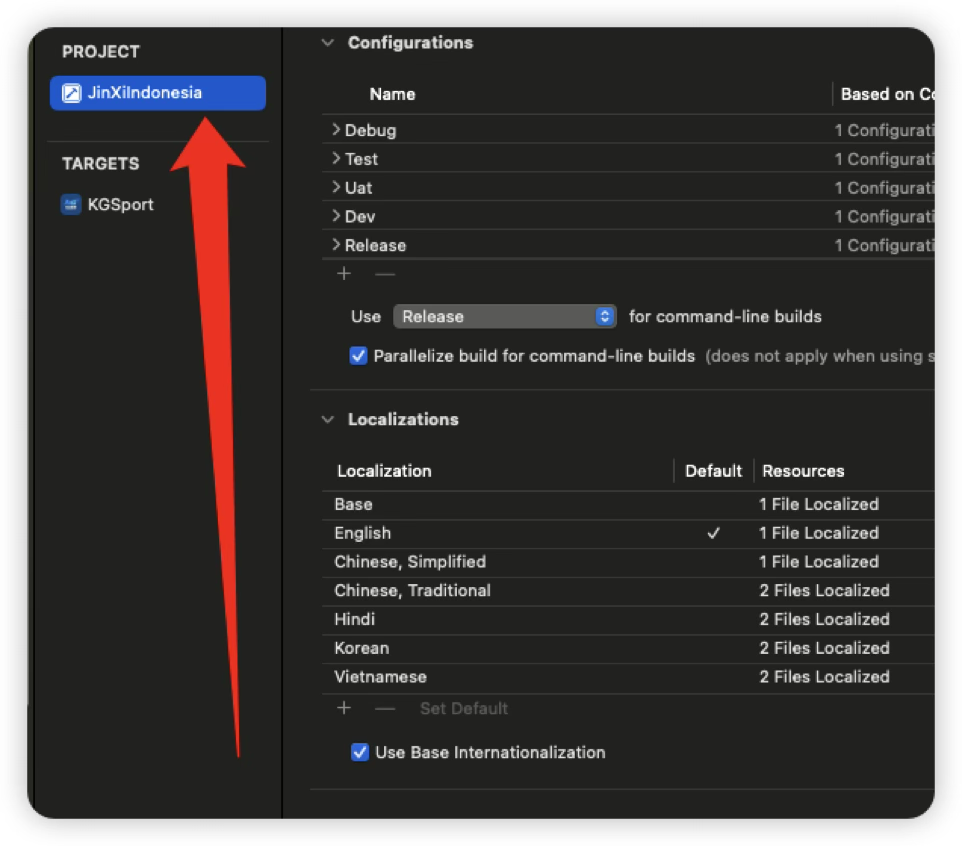
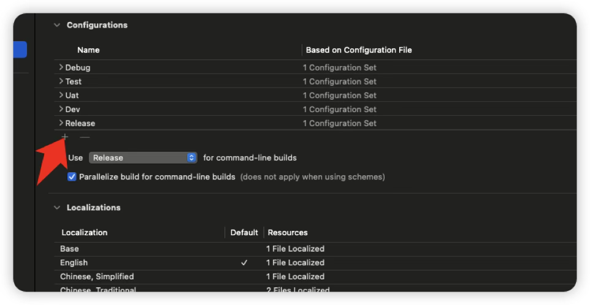

Table of Contents
一、打开项目并找到 🔼 🔽
 |
 |
-
找到
build setting👉搜索Swift Compiler - Custom Floags。这里就是第一步添加的环境，然后在里面添加宏定义变量
三、代码中使用 🔼 🔽
一定要先判断自定义的宏定义，在判断系统的**
debug和release**，系统的宏优先级更高，所以会每次都进入系统宏的条件中
import UIKit
open class PYBaseUrl: NSObject {}
extension PYBaseUrl {
#if DEV
//MARK: 开发环境
public static var base_dev = "https://XXX"
#elseif TEST
//MARK: 测试环境
public static var base_dev = "https://XXX"
#elseif UAT
//MARK: UAT环境
public static var base_dev = "https://XXX"
#else
#if DEBUG
//MARK: 测试环境
public static var base_dev = "https://XXX"
#else
// 生产环境的正式域名
public static var base_dev = "https://XXX"
#endif
#endif
}
四、配置 Podfile 🔼 🔽
修改对接的环境： 然后
pod install一次
# 👇 新增：指定 Xcode 项目文件和配置映射（特别重要）
project 'JinXiIndonesia.xcodeproj',
'Debug' => :debug,
'Release' => :release,
'Uat' => :debug,
'Dev' => :debug,
'Test' => :debug
五、如果需要安装多个app包 🔼 🔽